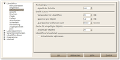
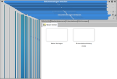

Installation
Dieser Artikel wurde für die folgenden Ubuntu-Versionen getestet:
Ubuntu 17.10 Artful Aardvark
Ubuntu 16.04 Xenial Xerus
Ubuntu 14.04 Trusty Tahr
Zum Verständnis dieses Artikels sind folgende Seiten hilfreich:
Dieser Artikel dient als Ergänzung zum Hauptartikel LibreOffice und beschreibt die unterschiedlichen Möglichkeiten, das Office-Paket zu installieren. Empfohlen wird die Installation aus den offiziellen Paketquellen.
Voraussetzungen¶
Um den vollen Funktionsumfang von LibreOffice nutzen zu können, sollte Java, oder genauer: eine Laufzeitumgebung (Java Runtime Environment, JRE), installiert sein. Für welche Funktionen Java benötigt wird, erklärt die LibreOffice FAQ  . Ist ein JRE (OpenJDK oder Oracle Java) installiert worden, muss man dies nach der Installation im Menü unter "Extras -> Optionen -> LibreOffice -> Erweitert" einbinden.
. Ist ein JRE (OpenJDK oder Oracle Java) installiert worden, muss man dies nach der Installation im Menü unter "Extras -> Optionen -> LibreOffice -> Erweitert" einbinden.
Installation¶
LibreOffice ist seit Ubuntu 11.04 Bestandteil einer Standardinstallation von Ubuntu, Kubuntu, Ubuntu GNOME sowie Ubuntu MATE. Die Paket-Suchseite LibreOffice-core  zeigt, welche LibreOffice-Version jeweils in welcher Ubuntu-Version vorhanden ist.
zeigt, welche LibreOffice-Version jeweils in welcher Ubuntu-Version vorhanden ist.
Xubuntu (bis 15.04) und Lubuntu verwenden dagegen in der Standardinstallation die Programme Abiword (Textverarbeitung) und Gnumeric (Tabellenkalkulation). Möchte man hier LibreOffice nachinstallieren, werden folgende Pakete benötigt: [1]
libreoffice (Metapaket für alle Kernkomponenten)
libreoffice-l10n-de (deutsches Sprachpaket)
libreoffice-help-de (deutsche Hilfe)
 mit apturl
mit apturl
Paketliste zum Kopieren:
sudo apt-get install libreoffice libreoffice-l10n-de libreoffice-help-de
sudo aptitude install libreoffice libreoffice-l10n-de libreoffice-help-de
PPA¶
Für LibreOffice werden vom LibreOffice Packaging Team verschiedene "Personal Packages Archive" (PPAs) [2] angeboten. Nach dem Einbinden der Fremdquellen und dem Aktualisieren der Paketquellen erfolgt die Installation wie oben angegeben.
Aktuelle Version¶
Um immer die aktuelle und stabilste Version von LibreOffice zu verwenden, kann diese PPA verwendet werden:
Adresszeile zum Hinzufügen des PPAs:
ppa:libreoffice/ppa
Hinweis!
Zusätzliche Fremdquellen können das System gefährden.
Ein PPA unterstützt nicht zwangsläufig alle Ubuntu-Versionen. Weitere Informationen sind der  PPA-Beschreibung des Eigentümers/Teams libreoffice zu entnehmen.
PPA-Beschreibung des Eigentümers/Teams libreoffice zu entnehmen.
Damit Pakete aus dem PPA genutzt werden können, müssen die Paketquellen neu eingelesen werden.
Bestimmte Version¶
Für spezielle LibreOffice-Versionen können diese PPAs verwendet werden:
LibreOffice 5.4.x series stable backports
für Ubuntu 14.04, 16.04 und 17.10LibreOffice 5.3.x series stable backports
für Ubuntu 14.04 und 16.04LibreOffice 5.2.x series stable backports [EOL]
für Ubuntu 14.04 und 16.04LibreOffice 5.1.x series stable backports
für Ubuntu 14.04 und 16.04LibreOffice 5.0.x series stable backports [EOL]
für Ubuntu 14.04 LibreOffice 4.4.x series stable backports [EOL]
für Ubuntu 14.04 LibreOffice 4.2.x series stable backports
für Ubuntu 14.04
Hinweis!
Zusätzliche Fremdquellen können das System gefährden.
Manuell¶
Hinweis:
Bei dieser Installationsart ist der parallele Betrieb von LibreOffice und Apache OpenOffice möglich.
Zuerst lädt man die folgenden Archive von der offiziellen Webseite  herunter.
herunter.
LibreOffice_<VERSION>_Linux_<ARCHITEKTUR>_deb.tar.gz
LibreOffice_<VERSION>_Linux_<ARCHITEKTUR>_deb_langpack_de.tar.gz
LibreOffice_<VERSION>_Linux_<ARCHITEKTUR>_deb_helppack_de.tar.gz
Hinweis!
Fremdpakete können das System gefährden.
Diese drei Archive, in denen sich die .deb-Pakete (Installationspaket OfficeSuite, Sprach- und Hilfepaket) befinden, müssen erst entpackt [3], dann geöffnet werden. In den Unterordnern DEBS öffnet man ein Terminal[5] und gibt folgenden Befehl ein
sudo dpkg -i *
Man beginnt mit dem Installationspaket ... deb.tar.gz und wiederholt die Prozedur mit dem Sprach- und Hilfepaket.
Hinweis:
Ab Version 4.1.x gibt es keinen separaten Ordner /DEBS/desktop-integration mehr, die entsprechenden Pakete sind dort bereits im Ordner DEBS vorhanden.
Mit Hilfe eines (sich noch in der Testphase befindlichen) Installationsskript-Generators kann man sich online ein Installationsskript erstellen, welches die oben genannten Einzelschritte automatisiert durchführt. Hierbei kann man die Rechnerarchitektur sowie weitere Optionen auswählen. Die Programmpakete werden beim Ausführen des Skripts direkt von der LibreOffice-Webseite heruntergeladen.
Nachinstallation Base¶
Die Datenbank-Komponente Base wird in der mit Ubuntu-Derivaten gelieferten Version standardmäßig nicht installiert. Dennoch kann sie beim Aufruf von LibreOffice ausgewählt werden, dabei passiert allerdings nichts, auch kein Hinweis oder Fehlermeldung auf eine fehlende Installation.
libreoffice-base
mit apturl
Paketliste zum Kopieren:
sudo apt-get install libreoffice-base
sudo aptitude install libreoffice-base
Hinweis:
Die Installation von libreoffice-base umfasst auch die Installation von OpenJDK, und dies auch dann, wenn eine andere Java-Installation, bspw. Oracle Java, bereits vorhanden ist. Dabei kann es dazu kommen, dass ein vorhandener Symlink unter /etc/alternatives/java ersetzt und damit plötzlich ungewollt eine andere Java-Version verwendet wird.
In der Ausgabe von apt-get findet sich bei der Installation dann z.B. die Meldung.
update-alternatives: Warnung: /etc/alternatives/java ist freihängend; wird mit der besten Auswahl aktualisiert
Zur Prüfung
java -version
aufrufen und ggf. den Symlink wieder korrigieren (siehe auch Alternativen-System).
Für die Nutzung von Berichten sollte das Paket libreoffice-report-builder zusammen mit libreoffice-report-builder-bin installiert sein. Dies ist bei der Installation aus Ubuntu-Repositories nicht der Fall, so dass der alte Berichtsgenerator genutzt wird und z.B. die Berichte der Beispieldateien des Handbuchs nicht geöffnet werden können.
Integration mit anderen Programmen¶
Im Artikel OpenDocument Thumbnails wird beschrieben, wie sich Vorschaubilder für OpenDocument-Dateien im Dateimanager Nautilus anzeigen lassen.
Programm beschleunigen¶
Nur falls das Programm nicht schnell genug zu reagieren scheint, kann man versuchen, den Start von LibreOffice zu beschleunigen. Es kann helfen, in LibreOffice unter "Extras -> Optionen -> LibreOffice -> Arbeitsspeicher"
|  |
| Speichernutzung konfigurieren |
die "Anzahl der Schritte" auf 25 zu reduzieren
den Wert "Verwenden für LibreOffice" auf 128 MB und
den Wert von "Speicher pro Objekt" auf 8 MB zu setzen
Um Texte schneller zu scrollen, kann man "Extras -> Optionen -> LibreOffice -> Ansicht -> Antialiasing benutzen" deaktivieren (ab Programmversion 4.0 "Kantenglättung verwenden" genannt).
Weiterhin sollte für eine besonders hohe Geschwindigkeitssteigerung folgende Option deaktiviert sein: "Extras -> Optionen -> LibreOffice -> Raster -> Am Raster fangen". So sind die Raster-Punkte zwar nicht mehr sichtbar, aber das "Fangen" im Raster kann so trotzdem aktiv sein. Diese Werte optimieren nicht nur den Start, sondern ermöglichen flüssigeres Arbeiten mit LibreOffice.
LibreOffice-Box¶
Die LibreOffice-Box (Nachfolger der PrOOo-Box) sollte für den Einsatz von LibreOffice werben, musste aber mangels Beteiligung eingestellt werden. Die letzte verfügbare DVD enthält LibreOffice 4.0.6 oder 4.1.4 nicht nur für Linux, sondern auch für Mac OS X und Windows. Die meisten Inhalte der DVD kann man unter Ubuntu problemlos über die Paketverwaltung nachinstallieren, da sie in den offiziellen Paketquellen enthalten sind. Wirklich nützlich sind dagegen die zahlreich enthaltenen Anleitungen, Erweiterungen und Ergänzungen, die zwar auch über das Internet erhältlich sind, aber dort erst mühsam zusammengesucht werden müssen. Besonders erwähnenswert sind die enthaltenen Format- und Dokumentvorlagen. Die Datenmenge des zu ladenden Pakets beträgt ca. 2,8 GiB.
Problembehebung¶
Hilfe ist deutsch/englisch gemischt¶
Wenn beispielsweise beim Aufruf der Hilfe im Formulareditor englische Hilfetexte zu den Formeln erscheinen anstatt der deutschen Hilfetexte, kann man das Paket libreoffice-help-en-us entfernen [1]. Siehe dazu den Fehlerbericht 957589.
Die Tabellenreiter in Calc sind kaum lesbar¶
Das kommt auf die Darstellungsthemen an und dabei auf die Höhe des horizontalen Scrollbalkens. Abhilfe schafft diese englische Anleitung: Sheet name font size on LibreOffice Calc is too small .
Menüs, Tabs und Dropdown-Listen mit weißer Schrift¶
Sind die Markierungen in Menüs, die Texte von Tabs in Dialogen und Dropdown-Listen mit weißem Text auf hellgrauem Hintergrund, Abhilfe schafft die Deinstallation des folgenden Pakets:
sudo apt-get purge libreoffice-gtk3
Es wird dann auch das Metapaket libreoffice-gnome zur Deinstallation angeboten.
Fehlerhafte Fensterdarstellung¶
LibreOffice kann entweder die eigene Implementierung der Programmoberfläche verwenden oder, wie unter Ubuntu üblich, eine Portierung auf eine der verschiedene Oberflächenbibliotheken entsprechend der Desktopumgebung. Das Paket libreoffice-gtk (main) stellt den GTK-2-Port, das Paket libreoffice-gtk3 (main) entsprechend den GTK-3-Port. Im Paket libreoffice-kde (main) befindet sich der Qt-4-Port, allerdings mitsamt der KDE-Integration.
Sollte man mit einer dieser Oberflächenportierungen Darstellungsfehler haben, wie bspw. verzögertes Rendern beim Ändern der Fenstergröße, Artefakte beim verschieben des Fensters, unvollständige Darstellung des Dokumenteninhalts beim Scrollen oder ähnliches, dann kann man eine der anderen Portierungen oder die Standardoberfläche ausprobieren. Dazu müssen die entsprechenden Pakete installiert sein, und LibreOffice stellt eine Umgebungsvariable bereit um beim Programmstart eine der parallel installierten Oberflächen aufzurufen. Testen lässt sich das im Terminal mit folgenden Befehl(en):
Für die Standardoberfläche:
SAL_USE_VCLPLUGIN=gen libreoffice
Für die einzelnen Oberflächenportierungen:
SAL_USE_VCLPLUGIN=gtk libreoffice SAL_USE_VCLPLUGIN=gtk3 libreoffice SAL_USE_VCLPLUGIN=kde libreoffice
Fehlerhafte Fensterdarstellung in Xubuntu¶
|  |
| Fehlerhafte Fensterdarstellung |
Bei Xubuntu ist die Installation [1] von
libreoffice-gtk (main)
mit apturl
Paketliste zum Kopieren:
sudo apt-get install libreoffice-gtk
sudo aptitude install libreoffice-gtk
Pflicht, um eine korrekte optische Integration in die Desktop-Umgebung Xfce zu erreichen (siehe auch LibreOffice auf dem Xfce-Desktop ). Ohne das Paket erhält man Grafikfehler bei der Größenänderung des LibreOffice-Fensters. Alternativ kann man für neuere Versionen von LibreOffice auch das Paket libreoffice-gtk3 (main) installieren.
Kein Schatten unter Ausklappmenüs in Kubuntu¶
Durch einen Fehler im Paket libreoffice-kde erscheinen die Ausklappmenüs von LibreOffice flach. Da es keine Ränder oder dergleichen gibt, kann das sehr irritierend und unübersichtlich sein. Um das Problem zu beheben, kann man statt der KDE-Integration das GTK-Paket installieren. Dann muss man zwar GTK-Dateidialoge in Kauf nehmen, hat aber ein wesentlich übersichtlicheres LibreOffice. Zur Umstellung dienen folgende Befehle:
sudo apt-get purge libreoffice-kde sudo apt-get install --no-install-recommends libreoffice-gtk
Kein Zugriff auf Netzwerklaufwerke¶
Verbindet man Netzwerklaufwerke mit GVFS (Gnome Virtual File System), dann benötigt eine Anwendung GIO-Unterstützung (Gnome Input/Output) für den Zugriff auf dieses virtuelle Dateisystem. Um diese Unterstützung für LibreOffice bereitzustellen, muss folgendes Paket installiert sein: [1]
libreoffice-gnome (main)
mit apturl
Paketliste zum Kopieren:
sudo apt-get install libreoffice-gnome
sudo aptitude install libreoffice-gnome
Keine Postscript (Type 1)-Schriften mehr¶
Ab der Version 5.3.0 und höher unterstützt LibreOffice keinr Type-1-Schriftarten (Postscript-Schriften) ehr . Hierfür gibt es in der Anwendung keine Lösung, so dass Nutzern, die in ihren Dokumenten solche Schriften verwendet haben, nichts anderes übrig bleibt, als die Dokumente entsprechend anzupassen. Man muss sich also geeigneten Ersatz als TTF- oder OTF-Schriftartdatei suchen und gegebenenfalls im System installieren. In den LibreOffice-Einstellungen besteht dann die Möglichkeit, unter "Extras → Optionen → LibreOffice → Schriftarten" eine Ersetzungstabelle anzulegen, wodurch man die eine Schrift durch eine andere im Dokument ersetzen lassen kann. In diesem Zusammenhang sei auf den Artikel Schriftarten verwiesen, besonders auf den Abschnitt TeX Gyre TG Collection of Fonts.
 Übersichtsartikel
Übersichtsartikel- Erstellt mit Inyoka
-
 2004 – 2017 ubuntuusers.de • Einige Rechte vorbehalten
2004 – 2017 ubuntuusers.de • Einige Rechte vorbehalten
Lizenz • Kontakt • Datenschutz • Impressum • Serverstatus -
Serverhousing gespendet von